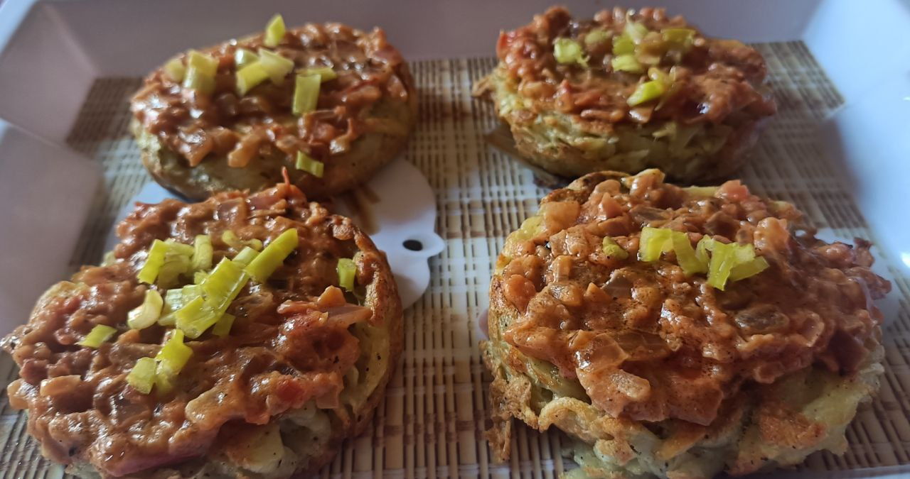

Potato Pizza

This recipe utilizes a four-cup frying pan (4 round sections) to create adorable mini potato pizzas. Each potato round is topped with a simple tomato sauce and a touch of fresh green onion, offering a fun and flavorful twist on pizza night.
Ingredients
Potato Rounds
2 large Potatoes, grated
2 Eggs
Salt, to taste
Black Pepper, to taste
Olive Oil
Tomato Sauce
1 can Crushed Tomatoes
1 clove Garlic, minced
Salt and Black Pepper
Finishing Touches
Green Onion Tops, chopped (optional)
Instructions
- Grate the potatoes using a box grater or food processor. Place the grated potatoes in a clean kitchen towel or cheesecloth and squeeze out as much excess moisture as possible. This step ensures crispy potato rounds.
- In a large bowl, combine the grated potatoes with the eggs, salt, and black pepper. Mix well to ensure everything is evenly distributed.
- Heat a thin layer of olive oil in your 4-round pan over medium heat. Make sure the pan is preheated before adding the potato mixture.
- Using a spoon or measuring cup, evenly distribute the potato mixture into each of the four round sections of the preheated pan. Gently press the mixture down to form flat, round shapes. Aim for a thickness of about 1/2 inch.
- Cook the potato rounds for 3-4 minutes per side, or until golden brown and crispy. You may need to adjust the heat slightly depending on your stove. Use a spatula to gently flip each potato round once it's golden brown on the bottom.
- While the potato rounds cook, combine the crushed tomatoes and minced garlic in a small saucepan. Simmer over low heat for 5-7 minutes, allowing the flavors to meld. Season with a pinch of salt and pepper, if desired.
- Once the potato rounds are cooked through and golden brown on both sides, remove the pan from heat. Top each potato round with a spoonful of the warm tomato sauce. Optionally, sprinkle with chopped green onion tops for a touch of freshness.